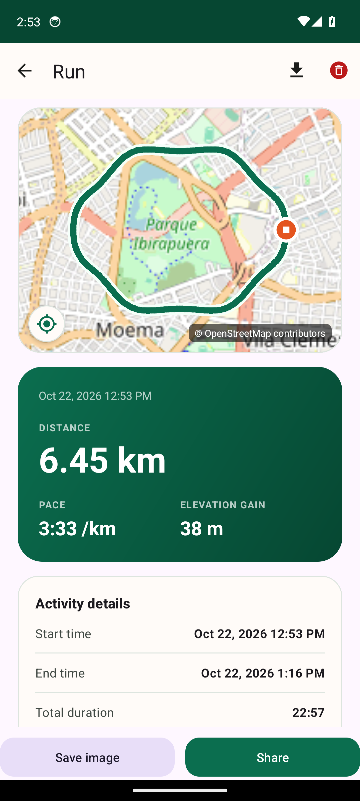
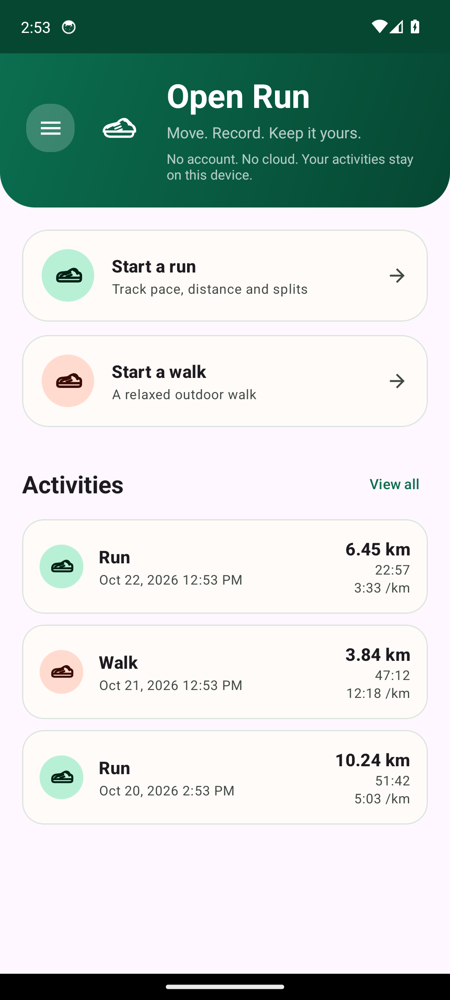
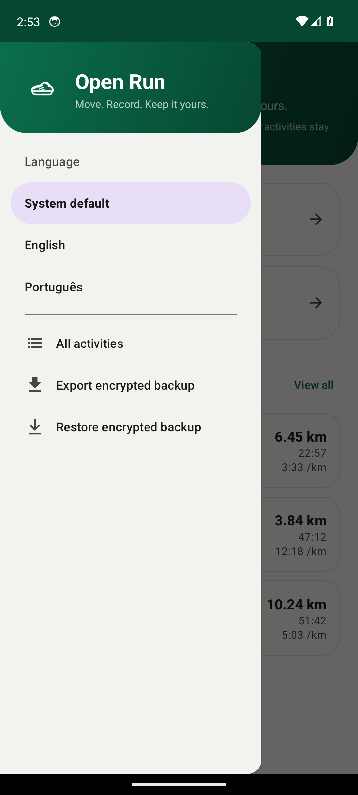
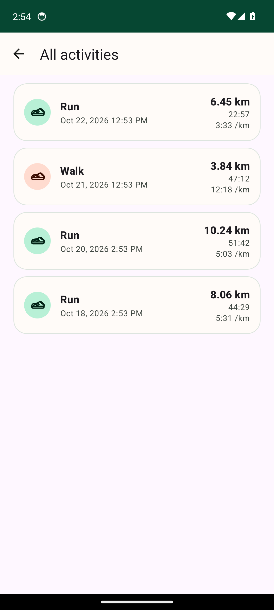

Local-first por princípio
Sessões, pontos de GPS, pausas e parciais ficam em um banco privado do app. Não há conta para criar, servidor de sincronização nem perfil publicitário.
PrivacidadeRastreador Android local-first · v0.6.5
O Open Run registra corridas e caminhadas com GPS de alta precisão, parciais exatas e nenhuma conta. Cada atividade fica no seu celular — pronta para exportar quando você quiser.


Feito para quem quer ser dono dos próprios dados, não de mais um feed social.
Ver as telasO que está incluído
O Open Run foca no essencial: registrar, entender e ser dono dos seus dados.
Sessões, pontos de GPS, pausas e parciais ficam em um banco privado do app. Não há conta para criar, servidor de sincronização nem perfil publicitário.
PrivacidadeVelocidade Doppler, raio morto proporcional à precisão e confirmação de múltiplos fixes mantêm o jitter parado fora do percurso e da distância.
GPSCada ponto aceito guarda o tempo móvel real. As parciais de 1 km usam esse relógio, então pausas nunca distorcem o ritmo.
TreinoGPX para mapas e serviços de treino, FIT para Garmin, PDF para um relatório legível, XLSX para análise e PNG para compartilhar.
Seus dadosCrie um arquivo .runbackup portátil protegido com PBKDF2 e AES-256-GCM. Restaure em outra instalação sem conta na nuvem.
Se o Android encerrar o processo, a sessão continua no Room. Reabra o app para retomar, finalizar e salvar ou descartar.
ConfiabilidadeFeito para o celular na sua mão
Uma interface focada em iniciar uma corrida, ler o mapa, revisar parciais e encontrar qualquer atividade passada.


Capturas da interface em inglês; o app também está disponível em português.
GPS sem ruído
Deriva de GPS é normal. Transformar essa deriva em distância falsa não é. O Open Run filtra os fixes antes de chegar ao percurso.
Ler o filtroCom velocidade perto de zero, a âncora de posição fica parada em vez de aceitar saltos de multipath como movimento real.
O limiar de movimento cresce com a precisão informada, então um fix de 20 m não pode criar um trecho de 2 m.
Quando a velocidade é ambígua, três fixes consistentes são exigidos antes de gravar um novo trecho.
A altitude por pressão é calibrada com a primeira altitude GPS válida e preferida sobre a elevação ruidosa do GPS.
Seus dados
Sem prisão tecnológica. Leve suas atividades para outras ferramentas ou guarde uma cópia criptografada de tudo.
Formatos abertos
Use suas atividades em softwares de mapa, Garmin Connect, Strava ou qualquer ferramenta que leia GPX ou FIT.
Relatórios legíveis
Exporte um relatório imprimível ou uma planilha com o resumo e todos os pontos capturados.
Arquivo criptografado
Um arquivo local protegido por senha com sessões finalizadas, pontos, pausas e parciais. Importe em outra instalação.
Visão geral
O Open Run é feito com Java, Android Views e Room. O motor de rastreamento é independente da plataforma e coberto por testes JVM; testes instrumentados cobrem o banco, o backup criptografado e as telas principais.
Explorar o repositórioComo funciona
Conceda localização precisa e notificações, depois escolha corrida ou caminhada.
O serviço em primeiro plano grava pontos, pausas e parciais mesmo com a tela desligada.
Revise o mapa e os gráficos, depois exporte, compartilhe ou crie um backup criptografado.
Privacidade por arquitetura
O banco de atividades é privado do app. O Open Run não cria perfil, não envia seu percurso e não exige login.
Os tiles do mapa revelam a área visualizada ao provedor, como em qualquer mapa online. O percurso gravado não é enviado como arquivo.
Perguntas, respondidas
Respostas curtas para corredores, caminhantes e qualquer pessoa avaliando o app.
Sim. Não há conta, assinatura ou SDK de anúncios. Baixe o APK assinado diretamente do GitHub Releases.
Gravação, histórico, parciais, backups e exportações funcionam offline. Os tiles do mapa e o fundo do cartão de compartilhamento precisam de internet; sem ela, o percurso é desenhado em um fundo limpo.
Sessões, pontos, pausas e parciais ficam em um banco Room privado no aparelho. O Open Run não tem sincronização em nuvem. Arquivos GPX, FIT, PDF, XLSX e .runbackup só são criados quando você exporta.
O Open Run exporta GPX 1.1 e Garmin FIT padrão. Qualquer serviço que suporte esses formatos pode importar.
Ainda não. As versões são distribuídas como APK assinado no GitHub. O Android pode pedir permissão para instalar a partir do navegador ou gerenciador de arquivos na primeira vez.
Android 8.0 (API 26) ou superior. O Google Play Services é necessário para localização fused de alta precisão; os mapas usam tiles do OpenStreetMap e não precisam de chave da API do Google Maps.
Pausa e retomada manuais são suportadas e as pausas são persistidas com exatidão. A pausa automática existe no motor de rastreamento, mas está desabilitada por padrão nesta versão.
A sessão não finalizada permanece no banco local. Ao reabrir, o app oferece Retomar, Finalizar e salvar ou Descartar. Retomar restaura pontos, pausas, distância e parciais.
Quando você quiser
Gratuito, assinado e local-first. Android 8.0+ com Google Play Services.